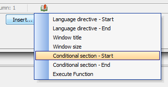

Creating Help Windows for Components
Table of Contents
HelpID
|
Creating a Help ID:
1. Type a string into the Help Id: text-box.
2. Click Define Help Source, define the table you will use for your help (see Help Source).
3. Add Text to your Help Id by clicking Edit Help Text for this Help Id. (see Edit Help Text)
4. Alternatively, add an existing help topic by clicking the Browse Existing Help Topics button.
5. Click OK.

The Help ID
|

Help Source
|
Define a Help Source:
1. Open the Define Source for Help Text Dialog.

The Help Source
2. Type a string into the Help Id: text box
3. Click Define Help Source.
4. If you don't want to use a globally defined help table leave Use project help table unchecked.
5. If you want Alpha Anywhere to Create a Help Table for you click the Create Help Table button at the bottom of the screen.
The Create Help Table Button
6. Alternatively, use the dropdown button to select either a DBF or SQL table for your Table Type. With SQL you will also need to define a Connection String.
7. Click the Button
 next to
Table name to choose a help table from existing
tables in your project.
next to
Table name to choose a help table from existing
tables in your project.
8. Click the Button
 next to
ID field to select an ID field from existing fields
in the table you selected.
next to
ID field to select an ID field from existing fields
in the table you selected.
9. Click the Button
 next to
Help text field to select a helptext field from the table you selected
for you help.
next to
Help text field to select a helptext field from the table you selected
for you help.
10. Click OK.
Make a global project-level HelpTopics table:
|
Procedure:
1. Set the global project-level HelpTopics table in Web Project Properties
2. Check the Use project help table checkbox in the Define Source for Help Text dialog.
Edit Help Text
|
Create a Help Text:
1. Open the Help ID dialog. Create a string for the Help Id: textbox and define you Help Source.
2. Click the Edit Help Text for this Help Id button.
3. The Edit Help Text - Help Topic Id: Dialog will open. Fill in any HTML you wish to appear in your help.
Add text to your help with HTML
4. Optionally, open the HTML Editor by pressing the Edit in HTML Editor button.
5. Optionally, add special command directives to make your help more dynamic by clicking the Insert button.

Insert adds Command Directives
Special Command Directives
|
|
Add a Window Title Directive:
1. Open the Edit Help Text - Help Topic Id: Dialog.
2. click the Insert button and choose the directive you want from the drop-down menu, this example uses Window title.
Directive Menu
3. Replace the default entry in the directive with relevant data. In this case enter a new title.
Before:
After:
4. Click Save. If you go to Working Preview you should see a Window Title in your help dialog when you load it.

Window Title
|
Add a Window Size Directive:
1. Open the Edit Help Text - Help Topic Id: Dialog.
2. Click the Insert button and choose the Window size directive.
3. Replace the filler text in the directive with the Width and Height you want.
Before:
After:
4 Click OK, and OK again, and Save. Go to the Working Preview to see your new Help dialog.

A 6" Wide by 3" Tall Help Created with a Window Size Directive
{LanguageStart:language name} and {LanguageEnd} Language Directives
|
Add a Language Directive
1. Open the Edit Help Text - Help Topic Id: Dialog.
2. Click the Insert button and choose the Language directive - Start.
3. The {LanguageStart:Enter_Language_Name_Here} directive will appear in the "Edit Help Text - Help Topic ID" Dialog
4. Delete the filler text in the directive and replace it with the name of the language you want to use. For example {LanguageStart:French}
5. Click Insert a second time and select Language directive - End. Your code should look something like this.

6. Everything inside these two language tags will be used when this language is active. Fill in the HTML and directives that you want to use.
The French Language Directive
7. Now you need to activate the Language Directive. Go to the Design page menu and under Code select the Server-Side Events page.
8. From the list of Server-Side Events select OnGridExecute, it should be near the top of the list.
9. Copy and paste the following code into the OnGridExecute code displayed. If you identified a different language in {LanguageStart: } then use that instead of French.
|
8. Go to the Working Preview and see the result.

Success!
Conditional Directives
{ConditionStart: condition ID: logical expression} and {ConditionEnd: condition ID}
|
Add a Conditional Directive:
1. Go to the Grid > Properties page, find the Record Navigation/ Grid Toolbar properties.
2. Check the Help Window box
and open the Help ID property with the row
button  .
.
3. Click the Edit Help Text for this Help Id button and open the Edit Help Text - Help Topic Id: Dialog.
4. Click the Insert button and choose the Conditional section - Start tag. Click on it to insert it in the dialog.

3. In the dialog, replace the filler text 'Enter_Condition_Id' in Condition section - Start tag with a unique id like 'c1' or any arbitrary string.
Before:
After:
4. Replace the 'Enter_condition_Expression' filler text in Condition section - Start with a condition to be tested, like session.var1="alpha"
Before:
After:
5. Add the help text, images, hrefs, ect... that you want to be displayed when the condition above is met.
6. Click the Insert button again and select the Conditional section - End tag.
7. Replace the filler text 'Enter_Condition_Id' in the Conditional section - End tag with the same id you entered for the Conditional section - Start tag.
8. Click OK to exit the Edit Help Text - Help Topic Id: dialog. Click OK again to exit the Help ID dialog.
|
Activate a Conditional Directive with an Action Button:
9. Now that you have defined a Conditional directive you
need a way to activate it. In your Properties
list, scroll down to Action Buttons and click
the button  .
.
10. The Action Button Editor will open. Give your Action button a Name property, use the name SETGROUP
11. Under the Button Action
property click the Javascript property button
 .
.

12. The Edit OnClick Event dialog will appear. Click the Add New Action button.
13. In the Action Javascript - Select an Action dialog, scroll down the Actions list on the Right and click on Ajax Callback.
14. Click OK.
15. The Action Javascript - Ajax Callback Action dialog will open. Under the Function Name property type setGroup. Click OK and Save.
16. Under the Button Appearance properties write 'Set Group' next to the Button text property.
17. Click OK to close the Action Javascript Editor.
18. In the Grid>Properties page
Properties list Scroll down to the
Freeform Edit Regions properties. Click the button
 to the right
of the Above grid property.
to the right
of the Above grid property.
19. In the Freeform Edit Regions dialog you should see a list of Available Placeholders with {ActionButton:SETGROUP} at the top of the list.
20. Double click on {ActionButton:SETGROUP} to add it to the HTML on the right. This will make your action button visible. Click OK to exit.
21. Now to link the action button with the Conditional directive. Go to the Design menu and under Code open the Xbasic Functions page. Copy and paste the following code into the Xbasic Functions page.
|
22. Go to Live Preview. Click Full Preview in the drop-down that opens. When your grid opens click on the Help icon. It will should load the default help.
In this case the Default is empty
23. Now close the Help and click the Set Group action button that you defined. Go back and open the Help again. You should see you Conditional Directive text.

The Conditional Dialog
|
{ExecuteFunction: function name}
|
Add an Execute Directive:
1. In the Grid Builder, open the Design page and open the Grid Properties page.
2. Scroll down to the Miscellaneous properties and find the Xbasic function declarations property.
3. Click the button
 next to
Xbasic function declarations.
next to
Xbasic function declarations.
4. In the Xbasic Function Declarations dialog that opens enter the following code.
|
|
5. Go to the Grid > Properties page, find the Record Navigation/ Grid Toolbar properties.
6. Check the Help Window box
and open the Help ID property with the row
button  .
.
7. Click the Edit Help Text for this Help Id button and open the Edit Help Text - Help Topic Id: Dialog.
8. Click the Insert button and choose the Execute Function tag. Click on it to insert it in the dialog.

The Execute Function Directive
9. In the Execute Function tag in the dialog, replace the filler text 'enter_function_name' with the function you just defined called myudf.
Before:
After:
10. Now go to Working Preview tab or the Live Preview tab (using Full Preview from the drop-down) and click on one of your Help icons. When the help window is displayed you will see the directive has been replaced by the result of the call to the myudf function. You should see something like this...
Custom help feature pack to add custom help systems. Add a button to bring up a help page for a grid or help for individual fields that can be accessed through F1 key.
Custom Help Windows in Action Javascript
|
Using Action Javascript in a Help page:
1. On the Design tab menu go to the Grid list and click to open the Fields page
2. Click the Insert... text at the bottom of the Fields page. The Insert Special Control dialog will open
3. Click on [Button] and a button control will be added to your list.
4. In the Field Properties list on the right go to Button Properties and in the Button label property row write 'Show a Help Topic'
5. Go down the Field Properties
list to the Javascript properties. Select the
onClick event property and click the button
 next to it.
next to it.
6. The Edit onClick Dialog will load. In the toolbar at the top of the dialog click the Add New Action button.
7. The Action Javascript - Select an Action dialog will open. Scroll down the Action list on the right and select the Open a Help Window action.
8. The Action Javascript - Display Help Topic in a Window will open.
9. Under Window Properties, go
to the Help ID property and click the button
 to open the
now familiar Help ID dialog.
to open the
now familiar Help ID dialog.
10. When the Help ID dialog opens place an id string in the Help Id: textbox, like HelpId1
11. Click the Define Help Source button and create a Help Source for your Help Id, if you don't already have one. The click on the Edit Help Text for this Help Id button and define some text for your help button.
12. Click OK to close and click OK on the Help Id dialog to exit it as well.
13. Adjust the remaining Window Properties to shape your help window to your liking . Here you will find the standard properties that you see in all windows in action javascript. These properties let you set the type, size, and position of the window. You can also specify javascript events that take place if the help window gets moved, hidden, resized, and so forth.
14. Close, go to Working Preview and click on the Show a Help Topic button you created.
Custom Help For Individual Fields
|
Add a Help Window to an Individual Field:
1. Go to the Grid Builder's Design page and under Grid click on Fields to open the Fields page.
2. Add a field to the Fields page Selected list. Then highlight that field.
Making a Help Window for the ContactTitle field
3. With a field selected go to the Field Properties menu on the Right and find the Display Settings properties.
4. Under Display Settings find the Has
Help checkbox and check it. This will open the
Help ID. Click the button
 to load the
Help ID dialog and edit
the field's Help.
to load the
Help ID dialog and edit
the field's Help.
|
Videos
Help Tables Help Source video 1
Help Tables Language Directives video 4
Help Tables and Javascript actionsvideo 6